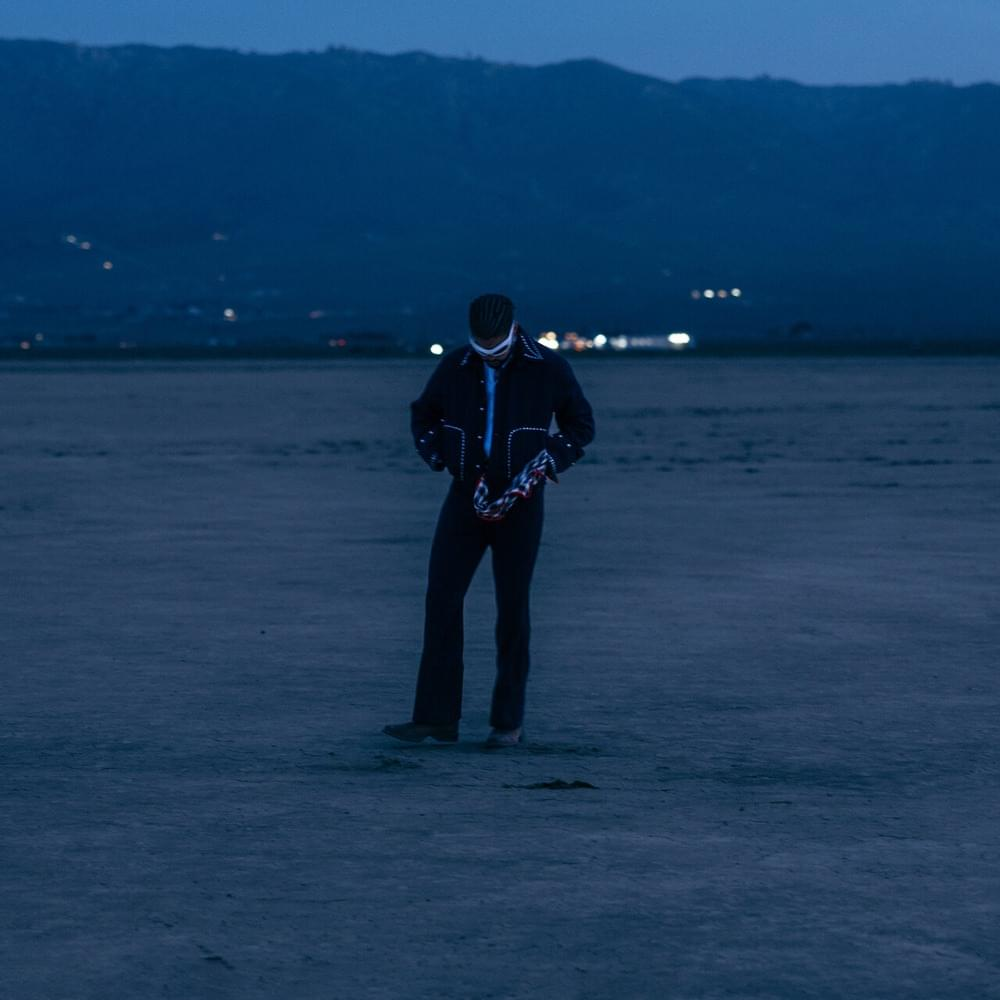

Quevedo 49 fter hour the mixtape. Dj Saot St Quevedo.
Arena y sal. Omar Montes, Saiko.
Polari Rmx. Fid, Saiko, Mora, Quevedo.

Los cantantes actuales de reguetón han logrado consolidar el género a nivel mundial, captando la atención de un amplio público y generando éxitos comerciales. Artistas como Daddy Yankee, J Balvin, Bad Bunny y Maluma han llevado el reguetón a nuevas alturas, colaborando con otros géneros y fusionando estilos. Aunque algunas letras pueden ser controversiales, el ritmo y la energía contagiosa son aspectos destacados. En última instancia, la opinión sobre los cantantes de reguetón varía según los gustos personales y preferencias musicales.